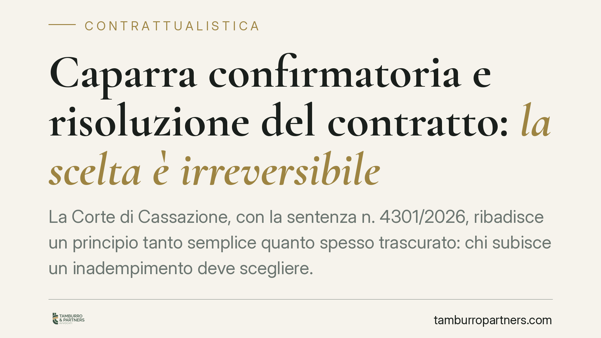

Caparra confirmatoria e risoluzione del contratto: la scelta è irreversibile
La Corte di Cassazione, con la sentenza n. 4301/2026, ribadisce un principio tanto semplice quanto spesso trascurato: chi subisce un inadempimento deve scegliere. O recede dal contratto trattenendo la caparra confirmatoria, oppure agisce per la risoluzione con risarcimento integrale del danno. Le due strade non si sommano e la scelta, una volta compiuta, non si torna indietro.

Il principio affermato dalla Cassazione
La pronuncia interviene su un nodo ricorrente nella contrattualistica, in particolare nelle compravendite immobiliari con versamento di caparra. Il punto è questo: la parte non inadempiente non può prima chiedere la risoluzione del contratto con il risarcimento integrale del danno e poi pretendere di trattenere la caparra come indennizzo automatico.
Si tratta di due rimedi alternativi e incompatibili. Chi sceglie di agire per la risoluzione ai sensi dell'art. 1453 del Codice civile rinuncia implicitamente alla facoltà di recesso con ritenzione della caparra prevista dall'art. 1385 c.c. La scelta processuale, in altre parole, consuma l'opzione.
Inquadramento normativo
L'art. 1385 c.c. disciplina la caparra confirmatoria. Se la parte che ha dato la caparra è inadempiente, l'altra può recedere dal contratto trattenendo quanto ricevuto. Se inadempiente è la parte che l'ha ricevuta, chi l'ha versata può recedere ed esigere il doppio. Questo meccanismo opera come liquidazione anticipata e forfettaria del danno: non occorre provarlo, perché la misura del ristoro è già fissata dalla caparra.
Il terzo comma dell'art. 1385 c.c. precisa però che, se la parte non inadempiente preferisce domandare l'esecuzione o la risoluzione del contratto, il risarcimento del danno è regolato dalle norme generali. Entra così in gioco l'art. 1453 c.c., che consente di chiedere la risoluzione del contratto con risarcimento del danno effettivamente subito, da provare secondo i criteri ordinari.
Il confine tracciato dalla Cassazione è logico. Il recesso con ritenzione della caparra presuppone che il contratto resti "sciolto" tramite recesso e che il danno sia già liquidato nella caparra. La risoluzione, invece, apre a un ristoro integrale ma soggetto a onere della prova. Sono logiche diverse, non cumulabili.
Cosa cambia per chi subisce l'inadempimento
La conseguenza pratica è rilevante soprattutto per i venditori immobiliari che ricevono una caparra e si trovano di fronte all'acquirente inadempiente.
Chi punta sulla via del recesso ottiene un risultato immediato e certo: trattiene la caparra senza dover dimostrare l'entità del pregiudizio. Il limite è che il ristoro è fissato a quell'importo, anche se il danno reale fosse superiore.
Chi sceglie la risoluzione può, in teoria, recuperare un danno più ampio della caparra. Ma deve provarlo, voce per voce, e accetta tempi processuali più lunghi e un esito meno prevedibile. Soprattutto, non potrà poi "ripiegare" sulla ritenzione automatica della caparra se la prova del danno risultasse difficile.
Il rischio concreto, segnalato dalla sentenza, è la domanda formulata male. Impostare l'atto chiedendo la risoluzione e, in subordine, la ritenzione della caparra come se fosse un indennizzo automatico espone a un rigetto parziale. La domanda va costruita con coerenza fin dall'inizio.
Cosa fare in concreto
- Decidere la strategia prima di agire. Valutate se il danno effettivo supera la caparra: se non la supera, il recesso con ritenzione è quasi sempre più conveniente perché evita l'onere probatorio.
- Quantificare il danno reale quando si opta per la risoluzione: raccogliete fin da subito documentazione su perdite, maggiori oneri e mancati guadagni, perché andranno dimostrati.
- Formulare la domanda giudiziale in modo coerente, evitando richieste che mescolino recesso e risoluzione come se fossero cumulabili.
- Curare la redazione della clausola in fase di contratto: specificate la natura confirmatoria della caparra e, se opportuno, affiancate una clausola penale che regoli diversamente la liquidazione del danno.
- Conservare le comunicazioni scambiate con la controparte: diffide, solleciti e corrispondenza sono spesso decisivi per provare l'inadempimento e la sua gravità.
La sentenza non introduce una regola nuova, ma consolida un orientamento che penalizza chi sottovaluta la fase di impostazione. Nei contratti con caparra, la scelta del rimedio è un passaggio tecnico che incide direttamente sul risultato. Consigliamo di definirla con precisione prima di inviare qualsiasi diffida formale.
Disclaimer
Contributo informativo a cura di Tamburro & Partners - Avv. Giuseppe Tamburro. Non costituisce parere legale.
Ogni contratto ha il suo equilibrio.
Se vuoi una revisione delle clausole o una redazione su misura, scrivi allo studio. Ti rispondiamo entro un giorno lavorativo.